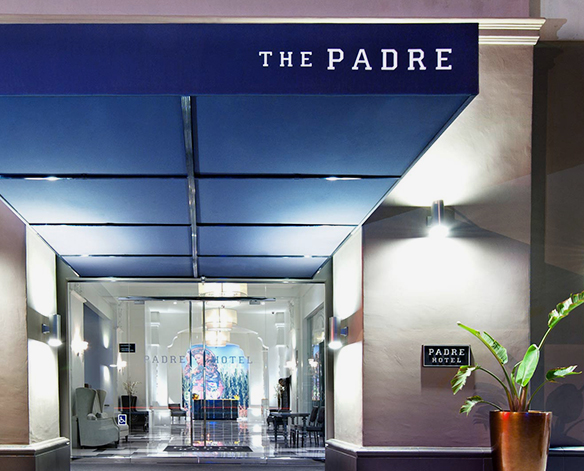
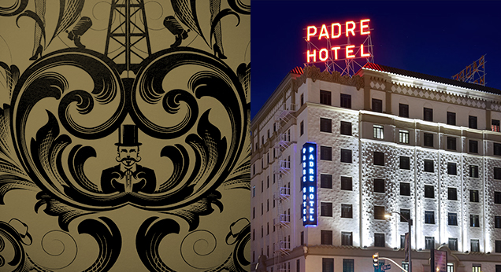

<section class="home-bakersfield ">
<div class="container ">
<div class="row ">
  <div class="col-sm-12 col-md-6 no-gutter">
    <div class="section-border">
      <h4>BAKERSFIELD’S ONLY 4-DIAMOND HOTEL</h4>
      <span class="dimond"> &#9670;</span>
      <p>Bakersfield’s best hotel, Padre Hotel, first opened its doors in 1928 and today is Bakersfield’s only 4-Diamond Hotel.  After being closed for several years, the historic hotel underwent a transformation to become a sophisticated boutique hotel with restaurants, nightlife, wedding venues and conference facilities.  After a long day out in the oil fields, working on the farm, or just exploring Bakersfield, come unwind in our luxurious guest rooms, host your private event, or enjoy one of Padre Hotel Bakersfield’s five unique dining options.</p>
    </div>
  </div>
  <div class="col-sm-12 col-md-6 no-gutter"></div>
</div>
<div class="row padre " >
  <div class="col-sm-12 col-md-6 no-gutter"> </div>
  <div class="col-sm-12 col-md-6 no-gutter ">
    <div class="row bg-text">padre <span>a historical landmark</span>
      </h2>
    </div>
    <div class="row no-gutter">
      <div class="col-sm-12 "> <a href="/contact/" class="hover-transition">CONTACT US</a> </div>
    </div>
  </div>
</div>
</section>
